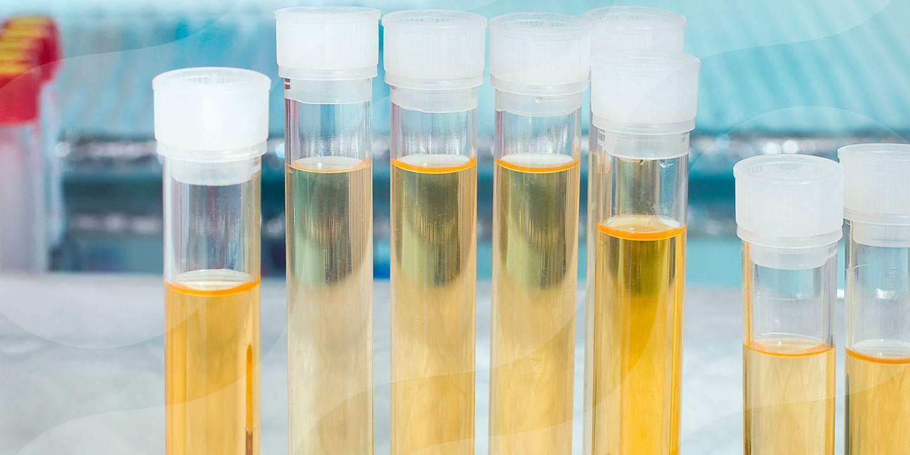

Laboratorio Clinico XimCar
Juntos por tu salud, resultados confiables y precisos
Brindamos los siguientes servicios
Conteo sanguineo

Este análisis de sangre mide muchos componentes y características de la sangre, como el hematocrito y el volumen corpuscular medio
(VCM). Es un análisis de sangre común que se suele incluir como parte de un chequeo de rutina. Puede ayudar a detectar una variedad de enfermedades,
incluyendo infecciones, anemia, trastornos del sistema inmunitario y cánceres de la sangre
PRECIO: $50
Análisis de hemoglobina

Este análisis de sangre mide los niveles de hemoglobina en la sangre. Es un análisis de sangre común que se utiliza para diagnosticar diferentes tipos de anemia,
talasemia, deficiencia de hierro y enfermedad del hígado. No se necesita ninguna preparación especial para este análisis
PRECIO: $30
Análisis de sangre completo

Este análisis mide muchas partes diferentes de la sangre, que incluyen los glóbulos rojos, los glóbulos blancos y las plaquetas.
Es un análisis de sangre común que se utiliza para diagnosticar diferentes trastornos sanguíneos. El hemograma completo consiste en una valoración
de todos los componentes celulares presentes en la sangre. En nuestras instalaciones contamos con máquinas automatizadas que realizan este análisis en menos de 1 minuto
con una pequeña cantidad de sangre
PRECIO: $80
Análisis de medula ósea

Este análisis implica la extracción de una muestra de médula ósea para su análisis. Es un análisis que se utiliza para diagnosticar diferentes tipos de cánceres de la sangre, como la leucemia.
Las muestras de médula ósea se examinan con un microscopio para determinar la presencia de células cancerosas.
PRECIO: $500
Análisis de orina

Este análisis mide los niveles de diferentes sustancias en la orina, como proteínas, azúcares y células sanguíneas.
Es un análisis de orina común que se utiliza para diagnosticar diferentes trastornos renales y urinarios.
También puede ayudar a detectar infecciones del tracto urinario y otras enfermedades.
PRECIO: $40
Análisis de colesterol

Este análisis mide los niveles de colesterol en la sangre. Es un análisis de sangre común que se utiliza para evaluar el riesgo de enfermedades cardíacas.
Los niveles altos de colesterol pueden aumentar el riesgo de enfermedades cardíacas.
PRECIO: $50
Análisis de tiroides

Este análisis mide los niveles de hormonas tiroideas en la sangre. Es un análisis de sangre común que se utiliza para diagnosticar diferentes trastornos de la tiroides,
como el hipotiroidismo y el hipertiroidismo
PRECIO: $60
Análisis de VIH

Este análisis mide los niveles de anticuerpos contra el VIH en la sangre. Es un análisis de sangre que se utiliza para diagnosticar la infección por VIH.
También se puede utilizar para controlar la progresión de la enfermedad en personas que ya han sido diagnosticadas con VIH.
PRECIO: $80
Análisis de Metales Pesados

Este análisis mide los niveles de diferentes metales pesados en la sangre o en la orina.
Es un análisis que se utiliza para detectar la exposición a metales pesados, como el plomo y el mercurio.
PRECIO: $200
Análisis de Microbiologia
Este análisis mide los niveles de diferentes microorganismos en la sangre, la orina o las heces.
Es un análisis que se utiliza para diagnosticar diferentes infecciones, como la neumonía, la meningitis y la infección del tracto urinario.
PRECIO: $150